设置同步
设置同步允许你在多台计算机之间共享 Visual Studio Code 的配置，例如设置、键盘快捷键和已安装的扩展，让你始终使用自己偏好的工作环境。
注意：VS Code 不会将你的扩展同步到远程窗口或从远程窗口同步，例如当你连接到 SSH、开发容器 (devcontainer) 或 WSL 时。
开启设置同步
你可以通过管理齿轮菜单中的备份和同步设置...选项，或者活动栏底部的账户菜单来开启设置同步。
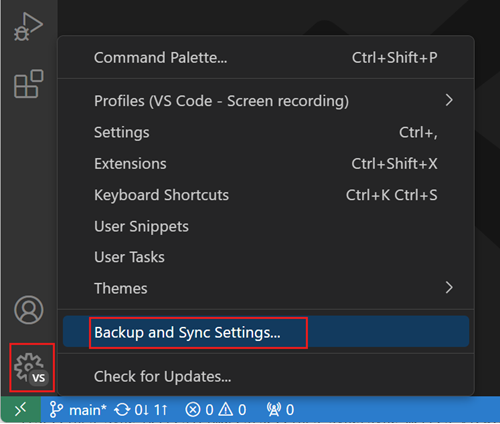
要使用同步设置，你需要登录并选择要同步的设置。目前，设置同步支持以下设置：
- 设置
- 键盘快捷键
- 用户代码片段
- 用户任务
- 用户界面状态
- 扩展
- 配置文件
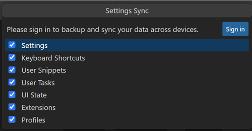
当你选择登录按钮时，可以选择使用 Microsoft 账户或 GitHub 账户登录。
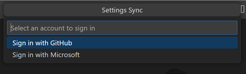
做出选择后，浏览器会打开，以便你登录 Microsoft 或 GitHub 账户。如果你选择 Microsoft 账户，可以使用个人账户（例如 Outlook 账户）或 Azure 账户，也可以将 GitHub 账户关联到新的或现有的 Microsoft 账户。
登录后，设置同步即会开启，并在后台持续自动同步你的偏好设置。
合并或替换
如果你已经在另一台计算机上进行了同步，而在当前计算机上开启同步，你将看到以下合并或替换对话框。
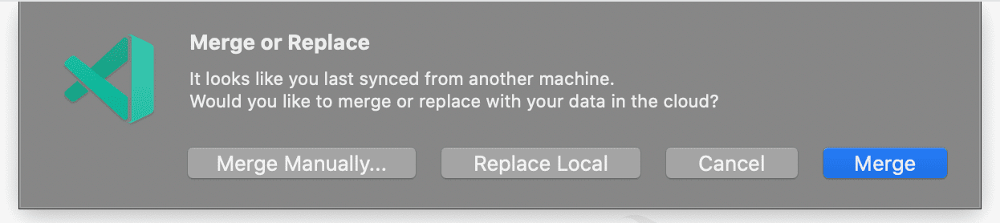
- 合并：选择此选项将把本地设置与云端的远程设置进行合并。
- 替换本地：选择此选项将用云端的远程设置覆盖本地设置。
- 手动合并...：选择此选项将打开合并视图，你可以在其中逐项合并偏好设置。
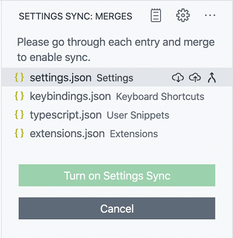
配置同步数据
具有 machine 或 machine-overridable 作用域的计算机设置默认不会同步，因为它们的值因计算机而异。你还可以从设置编辑器或使用设置 setting(settingsSync.ignoredSettings) 向此列表添加或删除你想忽略的设置。
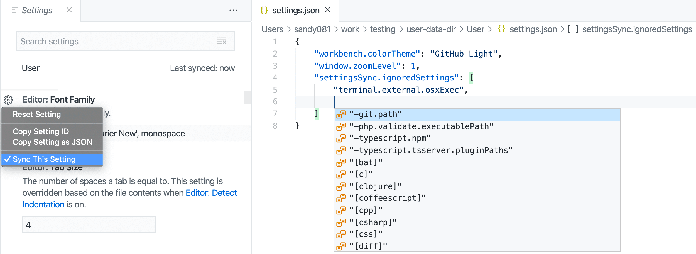
键盘快捷键默认按平台同步。如果你的键盘快捷键与平台无关，可以通过禁用设置 setting(settingsSync.keybindingsPerPlatform) 来跨平台同步它们。
所有内置和已安装的扩展及其全局启用状态都会同步。你可以跳过同步某个扩展，方法是在扩展视图 (kb(workbench.view.extensions)) 中操作，或者使用设置 setting(settingsSync.ignoredExtensions)。
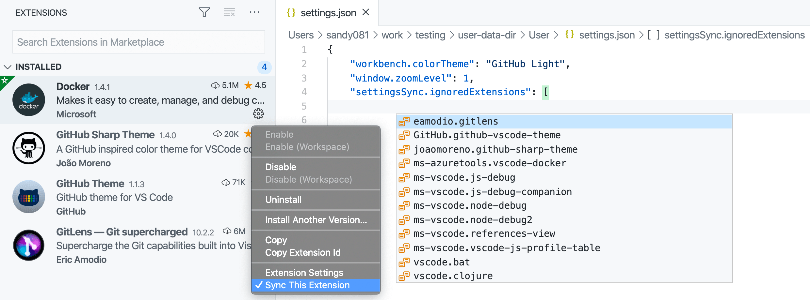
目前同步的用户界面状态包括：
- 显示语言
- 活动栏条目
- 面板条目
- 视图布局和可见性
- 最近使用的命令
- "不再显示"通知
你可以随时通过设置同步：配置命令更改同步内容，或者打开管理齿轮菜单，选择设置同步已开启，然后选择设置同步：配置。
冲突
在多台计算机之间同步设置时，偶尔可能会出现冲突。冲突可能发生在首次在计算机之间设置同步时，或者当某台计算机处于脱机状态时设置发生了更改。发生冲突时，你将看到以下选项：
- 接受本地：选择此选项将用你的本地设置覆盖云端的远程设置。
- 接受远程：选择此选项将用云端的远程设置覆盖本地设置。
- 显示冲突：选择此项将显示一个差异编辑器，类似于源代码管理差异编辑器，你可以在其中预览本地和远程设置，并选择接受本地或远程设置，或者手动在本地设置文件中解决更改，然后接受本地文件。
切换账户
如果你想随时将数据同步到不同的账户，可以关闭设置同步，然后使用不同的账户重新开启。关闭同步的命令是设置同步：关闭。
同步 Stable 版本与 Insiders 版本
默认情况下，VS Code Stable 和 Insiders 构建使用不同的设置同步服务，因此不会共享设置。你可以在开启设置同步时选择 Stable 同步服务，将 Insiders 与 Stable 同步。此选项仅在 VS Code Insiders 中可用。
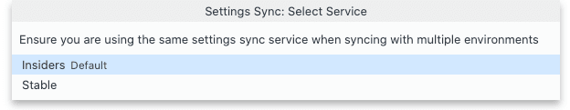
注意： 由于 Insiders 构建比 Stable 构建更新，同步它们有时会导致数据不兼容。在这种情况下，设置同步将在 Stable 上自动禁用以防止数据不一致。一旦发布了较新版本的 Stable 构建，你可以升级 Stable 客户端并开启同步以继续同步。
恢复数据
VS Code 在同步过程中始终存储你的偏好设置的本地和远程备份，并提供用于访问这些备份的视图。如果出现问题，你可以从这些视图恢复数据。
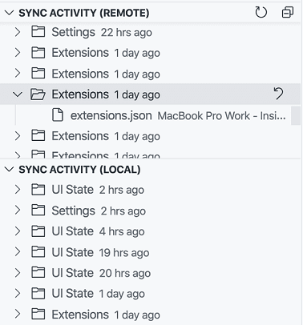
你可以通过命令面板使用设置同步：显示已同步数据命令打开这些视图。本地同步活动视图默认隐藏，你可以在设置同步视图溢出操作下的视图子菜单中启用它。
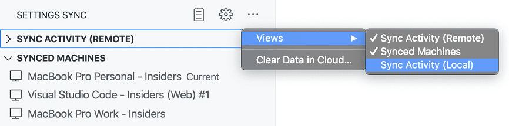
磁盘上的本地备份文件夹可以通过设置同步：打开本地备份文件夹命令访问。该文件夹按偏好设置类型组织，包含 JSON 文件的版本，文件名带有备份发生时间的时间戳。
>注意：本地备份在 30 天后自动删除。对于远程备份，每个单独资源（设置、扩展等）保留最新的 20 个版本。
已同步的计算机
VS Code 会跟踪正在同步你的偏好设置的计算机，并提供一个视图来访问它们。每台计算机都会根据 VS Code 的类型（Insiders 或 Stable）及其所在平台获得一个默认名称。你可以随时使用视图中计算机条目上的编辑操作来更新计算机名称。你还可以使用视图中计算机条目上的关闭设置同步上下文菜单操作来禁用另一台计算机上的同步。
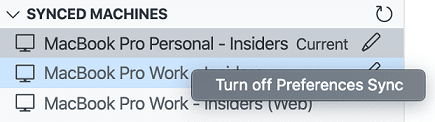
你可以通过命令面板使用设置同步：显示已同步数据命令打开此视图。
扩展作者
如果你是扩展作者，应确保你的扩展在用户启用设置同步时行为适当。例如，你可能不希望你的扩展在多台计算机上显示相同的已关闭通知或欢迎页面。
在计算机之间同步用户全局状态
如果你的扩展需要在不同计算机之间保留某些用户状态，则可以使用 vscode.ExtensionContext.globalState.setKeysForSync 将状态提供给设置同步。在计算机之间共享诸如 UI 已关闭或已查看标志之类的状态可以提供更好的用户体验。
在扩展功能主题中有一个使用 setKeysforSync 的示例。
报告问题
可以在日志（设置同步）输出视图中监控设置同步活动。如果你遇到设置同步问题，请在创建问题时包含此日志。如果你的问题与身份验证有关，还请包含账户输出视图中的日志。
如何删除我的数据？
如果你想从我们的服务器中删除所有数据，只需通过管理齿轮菜单下的设置同步已开启菜单关闭同步，然后选中清除所有云端数据的复选框。如果你选择重新启用同步，将如同首次登录一样。
后续步骤
- 用户和工作区设置 - 了解如何通过用户和工作区设置将 VS Code 配置为你的偏好。
常见问题
VS Code 设置同步与 Settings Sync 扩展相同吗？
不同，由 Shan Khan 开发的 Settings Sync 扩展使用 GitHub 上的私有 Gist 在不同计算机之间共享你的 VS Code 设置，与 VS Code 设置同步无关。
我可以使用哪些类型的账户登录设置同步？
VS Code 设置同步支持使用 Microsoft 账户（例如 Outlook 或 Azure 账户）或 GitHub 账户登录。不支持使用 GitHub Enterprise 账户登录。未来可能会支持其他身份验证提供程序，你可以在问题 #88309 中查看提议的身份验证提供程序 API。
>注意：VS Code 设置同步目前不支持使用你的 Microsoft 主权云账户。如果你有此需求，请在此 GitHub 问题中告知我们你想使用哪种类型的 Microsoft 主权云。
我可以为设置同步使用不同的后端或服务吗？
设置同步使用专用服务来存储设置和协调更新。未来可能会公开一个服务提供商 API，以允许自定义设置同步后端。
密钥链问题排查
>注意：本节适用于 VS Code 1.80 及更高版本。在 1.80 版本中，由于 keytar 已被归档，我们改用 Electron 的 safeStorage API。
>
>注意：keychain、keyring、wallet、credential store 在本文档中含义相同。
设置同步使用操作系统密钥链在桌面端加密持久化身份验证信息。如果密钥链配置错误或环境未被识别，使用密钥链在某些情况下可能会失败。
为帮助诊断问题，你可以使用以下标志重启 VS Code 以生成详细日志：
code --verbose --vmodule="*/components/os_crypt/*=1"Windows 和 macOS
目前，Windows 或 macOS 上没有已知的配置问题，但如果你怀疑有问题，可以携带上述详细日志在 VS Code 上提交问题。这对我们支持更多桌面配置非常重要。
Linux
在上述命令产生的日志顶部附近，你会看到类似以下的内容：
[9699:0626/093542.027629:VERBOSE1:key_storage_util_linux.cc(54)] Password storage detected desktop environment: GNOME
[9699:0626/093542.027660:VERBOSE1:key_storage_linux.cc(122)] Selected backend for OSCrypt: GNOME_LIBSECRET我们依赖 Chromium 的 oscrypt 模块来发现密钥环并将加密密钥信息存储在密钥环中。Chromium 支持多种不同的桌面环境。以下是几种常见的桌面环境及其排查步骤，可在密钥环配置错误时提供帮助。
GNOME 或 UNITY（或类似环境）
如果你看到的错误是"Cannot create an item in a locked collection"，很可能是你的密钥环中的 Login 密钥环已锁定。你应该启动操作系统的密钥环（Seahorse 是常用的密钥环查看 GUI），并确保默认密钥环（通常称为 Login 密钥环）已解锁。此密钥环需要在你登录系统时处于解锁状态。
KDE
KDE 6 尚未完全被 Visual Studio Code 支持。变通方法：最新的 kwallet6 也可以作为 kwallet5 访问，因此你可以通过将密码存储设置为 kwallet5 来强制使用 kwallet5，如下方配置与 VS Code 一起使用的密钥环所述。
你的钱包（即密钥环）可能处于关闭状态。如果打开 KWalletManager，你可以查看默认的 kdewallet 是否已关闭，如果已关闭，请确保将其打开。
如果你使用 KDE5 或更高版本，并且在连接 kwallet5 时遇到问题（如非官方 VS Code Flatpak 用户遇到的问题 #189672），你可以尝试配置密钥环为 gnome-libsecret，因为这将使用 Secret Service API 与任何有效的密钥环通信。kwallet5 实现了 Secret Service API，可以使用此方法访问。
如果你仍然遇到连接 kwallet5 的问题，一些用户报告授予特定的 D-Bus 服务权限是一个可行的修复方案：
flatpak override --user --talk-name=org.kde.kwalletd5 --talk-name=org.freedesktop.secrets com.visualstudio.code其他 Linux 桌面环境
首先，如果你的桌面环境未被检测到，可以携带上述详细日志在 VS Code 上提交问题。这对我们支持更多桌面配置非常重要。
（推荐）配置与 VS Code 一起使用的密钥环
你可以通过传递 password-store 标志手动告诉 VS Code 使用哪个密钥环。我们推荐的配置是，如果尚未安装 gnome-keyring，请先安装它，然后使用 code --password-store="gnome-libsecret" 启动 VS Code。
如果此解决方案适合你，你可以通过打开命令面板 (kb(workbench.action.showCommands)) 并运行首选项：配置运行时参数命令来持久化 password-store 的值。这将打开 argv.json 文件，你可以在其中添加设置 "password-store":"gnome-libsecret"。
如果你想尝试使用不同于 gnome-keyring 的密钥环，以下是 password-store 的所有可能值：
kwallet5：与 kwalletmanager5 一起使用。gnome-libsecret：与任何实现 Secret Service API 的包一起使用（例如gnome-keyring、kwallet5、KeepassXC）。- _(不推荐)_
kwallet：与旧版本的kwallet一起使用。 - _(不推荐)_
basic：更多详细信息请参阅下方的 basic 文本部分。如果你的密码存储未被自动检测到，请查看问题 #187338 中是否提到了你的设置。如果没有，欢迎在该问题中包含你的设置，或者在认为你的问题与自动密码存储检测无关的情况下，携带详细日志在 VS Code 上提交问题。
（不推荐）配置 basic 文本加密
我们依赖 Chromium 的 oscrypt 模块来发现密钥环并将加密密钥信息存储在密钥环中。Chromium 提供了一个可选的回退加密策略，使用基于硬编码在 Chromium 源代码中的字符串的内存密钥。因此，此回退策略充其量只是混淆处理，仅应在你能接受系统上任何进程理论上都可以解密你存储的机密这一风险时使用。
如果你接受此风险，可以通过打开命令面板 (kb(workbench.action.showCommands)) 并运行首选项：配置运行时参数命令将 password-store 设置为 basic。这将打开 argv.json 文件，你可以在其中添加设置 "password-store":"basic"。
我可以在 VS Code Stable 和 Insiders 之间共享设置吗？
可以。请参阅同步 Stable 版本与 Insiders 版本部分了解更多信息。
请注意，由于 Insiders 构建比 Stable 构建更新，有时可能会导致数据不兼容。在这种情况下，设置同步将在 Stable 上自动禁用以防止数据不一致。一旦发布了较新版本的 Stable 构建，你可以升级客户端并开启设置同步以继续同步。